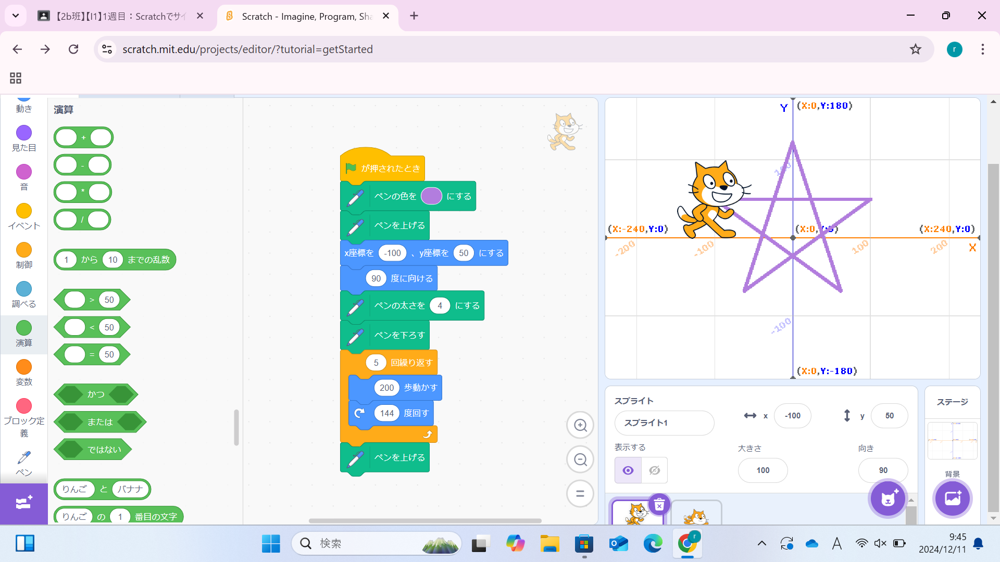
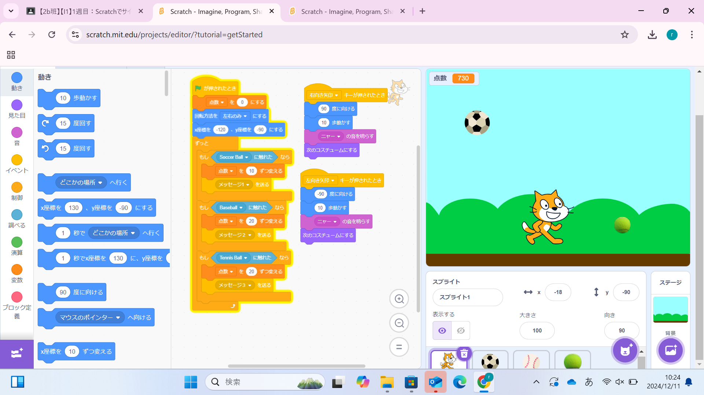

1週目のレポート ： 公大高専１年実習I-1
2b班25番 H.H
第1週目
1-1 サイエンスアート

1.内容
スクラッチを使って線を書くプログラムを組んで、星を描いた。
2.感想
想像通りにプログラムが動かず、何度か試行錯誤して完成させた。初めは猫を回転させる角度を星の内角である36度に設定していたため思った図形にならず、のちに内角ではなく外角を打ち込まなければいけないことに気づいて星を猫に描かせることができた。プログラミングを組む時はある程度の想像力を働かせて組んでいくことが大切だと感じた。
1-2 ゲーム

1.内容
スクラッチで、上から落ちてくるサッカーボール、テニスボール、野球ボールを拾いポイントを稼ぐゲームを作った。
2.感想
今回作ったゲームはテキストに記載されているプログラムを少しだけ応用させて作ったものなので、オリジナリティは少し欠けてしまったと感じた。１からプログラムを組みたかったが思うようにならなかったためこのようなゲームになった。次にプログラムを組む機会があれば、想像力を働かせて自分なりのものを作りたい。
1-3 ホームページ作成
私のホームページ
1.内容
Gifthubを使い自分のホームページを作成した。
2.感想
指定の場所を書き換えるだけで自分なりのホームページが作れて、想像以上に簡単だと感じた。作りながらしっかりとしたホームページを作るとなるともっと複雑になり難しいかもしれないと思った。
各ページへのリンク
1週目のレポート
2週目のレポート
3週目のレポート
私のホームページ